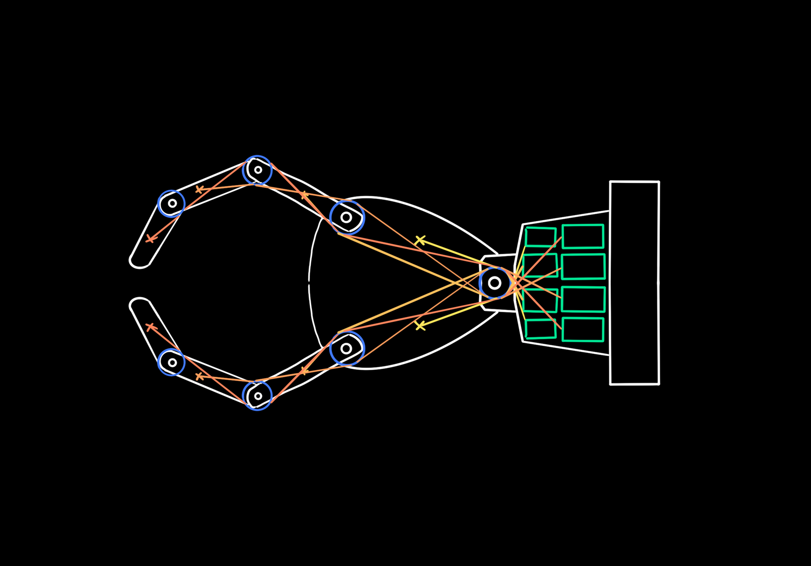
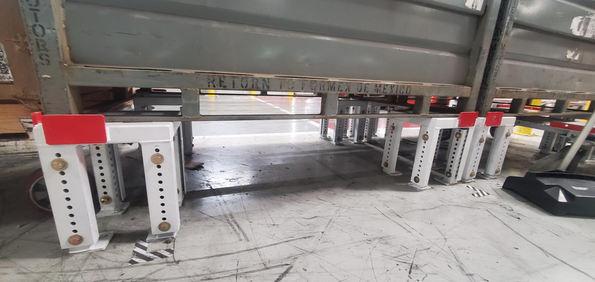
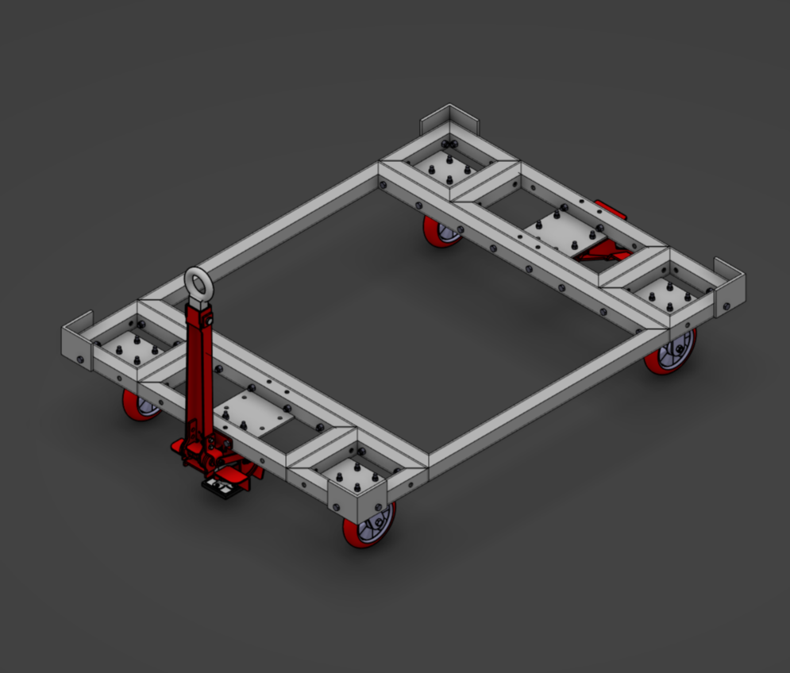
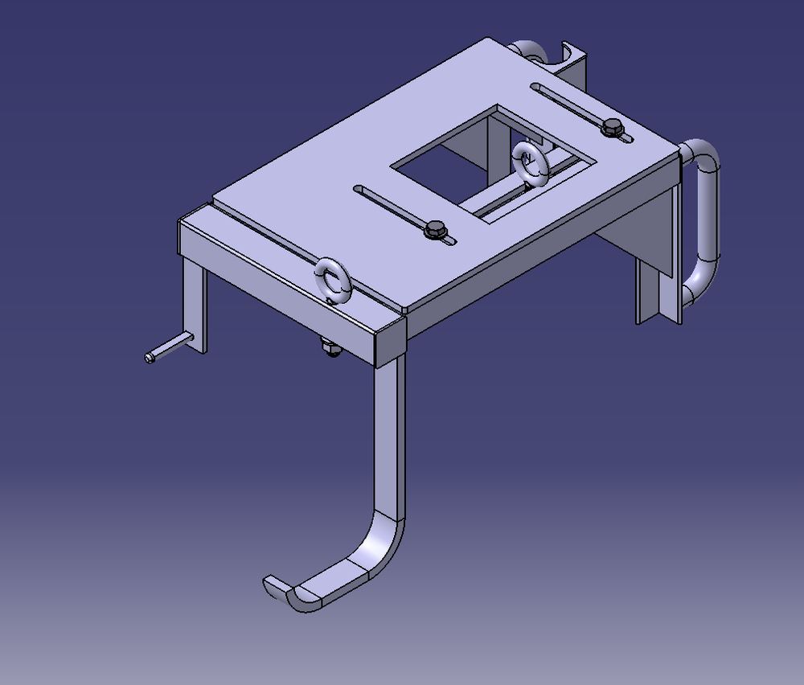
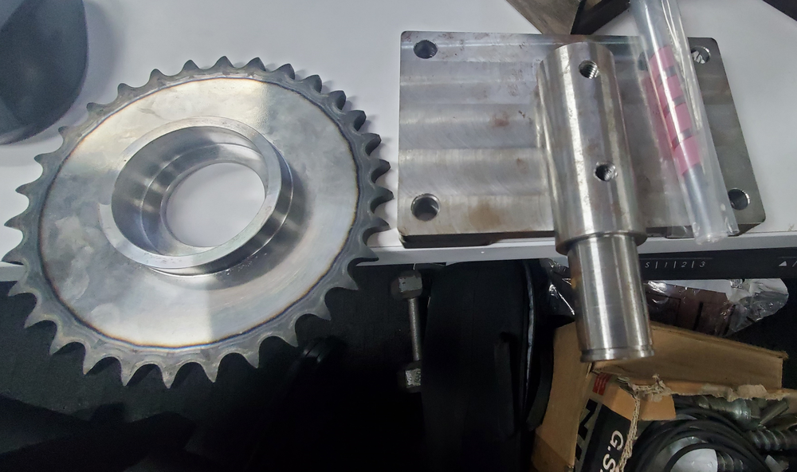
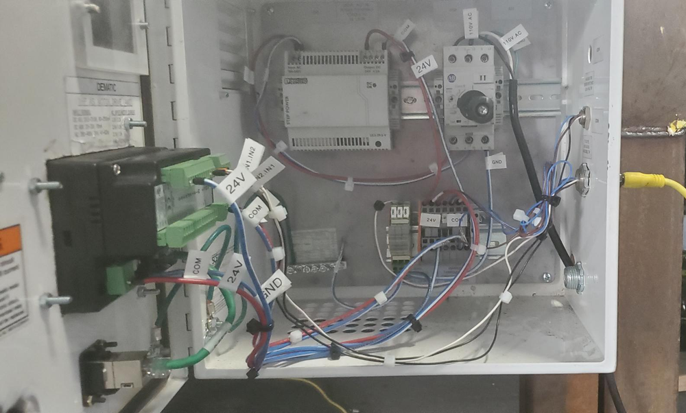
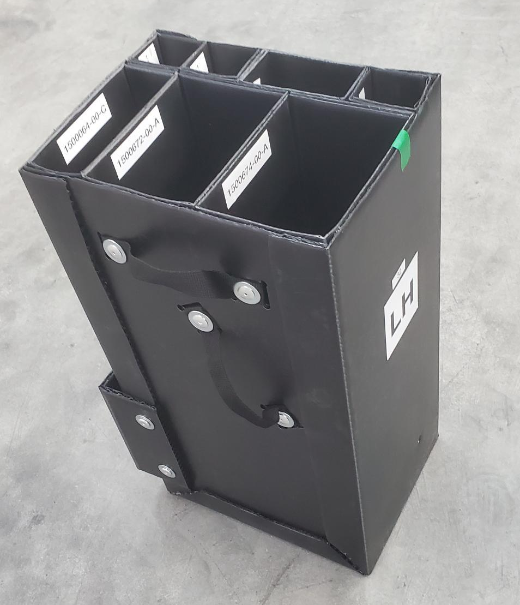
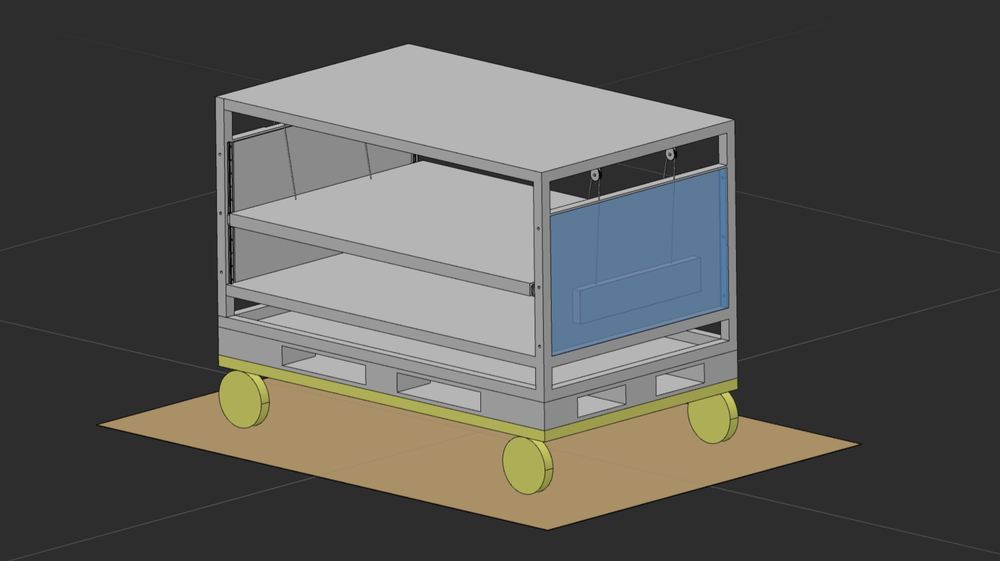

Tesla · Fremont, CA & Austin, TX · 2022–2023
Tesla — Production Control Equipment
Two terms as a Production Control Equipment Engineering Intern.
FremontMay–Nov 2022
AustinMay–Aug 2023
Ramp5,600 → 12,000 vehicles/week
Delivered24+ solutions
Fremont
- Delivered 24+ material handling solutions and automated data collection systems, supporting a production ramp from 5,600 to 12,000 vehicles per week.
- Prototyped a low-fidelity, proof-of-concept universal robotic end-of-arm tool, projected to save $300K over two years.
- Integrated Siemens and Allen-Bradley PLCs over Ethernet/PROFINET. The setup was later used to train Controls Technicians on troubleshooting cross-network devices such as conveyor VFDs.
Also: GA4 rear tail lamp GFR, CATIA V5 to 3DEXPERIENCE migration, GASX IP kitting, Siemens S7-1500 to Allen-Bradley 1756 via ProSoft gateway, and a T4 stacker/de-stacker PLC swap.








Austin
- Designed mechanical racks and dollies to streamline equipment setup and material flow.
- Standardized the team’s equipment selection and design, establishing modular, reusable production systems.